Released on January 14, 2009
(Next Release on January 22, 2009)
What a Difference a Year Makes
The monthly energy supply, demand, and price forecast published in the Short-Term Energy Outlook (STEO) was extended by one year, through December 2010, in the issue released yesterday by the Energy Information Administration (EIA). Unexpected economic and energy market events will surely arise to upset forecasters’ most carefully considered expectations. We can see how much such events can change expectations by looking at the STEO forecasts for 2009 that were published beginning with the January 8, 2008 edition.
In January of last year real gross domestic product (GDP) in 2009 was forecast to grow by 2.8 percent from the year before (Table 1). The outlook for manufacturing output was very similar at 2.9 percent growth. Each month since last January, the outlooks for the economy steadily deteriorated with yesterday’s STEO forecast for 2009 of declines of 2.0 percent and 7.2 percent in real GDP and the manufacturing production index, respectively.
| Table 1. Short-Term Energy Outlook (STEO) Forecasts of 2009 U. S. Economic Growth and Petroleum Consumption | ||||||
|---|---|---|---|---|---|---|
| STEO Publication Date | U.S. Real GDP, change from prior year (percent) | U.S. Manufacturing Production Index, change from prior year (percent) | 2009 Consumption (million barrels per day) | |||
| Total Petroleum | Gasoline | Distillate | Jet Fuel | |||
| 1/8/2008 | 2.8 | 2.9 | 21.18 | 9.47 | 4.37 | 1.67 |
| 2/12/2008 | 2.7 | 3.1 | 21.08 | 9.44 | 4.33 | 1.66 |
| 3/11/2008 | 2.1 | 2.5 | 20.94 | 9.39 | 4.29 | 1.65 |
| 4/8/2008 | 1.8 | 2.3 | 20.82 | 9.34 | 4.28 | 1.65 |
| 5/6/2008 | 1.5 | 2.0 | 20.71 | 9.29 | 4.26 | 1.63 |
| 6/10/2008 | 1.3 | 1.9 | 20.55 | 9.25 | 4.20 | 1.61 |
| 7/8/2008 | 1.1 | 0.9 | 20.33 | 9.19 | 4.15 | 1.58 |
| 8/12/2008 | 1.2 | 1.5 | 20.08 | 9.15 | 4.12 | 1.58 |
| 9/9/2008 | 1.1 | 1.7 | 19.99 | 9.13 | 4.08 | 1.55 |
| 10/7/2008 | 0.8 | 0.5 | 19.74 | 9.05 | 3.99 | 1.52 |
| 11/12/2008 | -1.4 | -5.5 | 19.31 | 8.97 | 3.90 | 1.47 |
| 12/9/2008 | -1.3 | -5.4 | 19.28 | 8.92 | 3.89 | 1.47 |
| 1/13/2009 | -2.0 | -7.2 | 19.12 | 8.89 | 3.87 | 1.45 |
| The archive of previously published Short-Term Energy Outlooks going back to 1983 is available at: http://www.eia.doe.gov/emeu/steo/pub/outlook.html . | ||||||
One of the consequences of the dramatic deterioration in the economic outlook is a reduction in expected petroleum consumption. Over the last 12 months the forecast for average 2009 total U.S. petroleum consumption has been lowered by just over 2 million barrels per day (bbl/d) as shown on Table 1. This lowering of the 2009 consumption outlook not only reflects the poorer 2009 economic outlook, but also the dramatic decline in consumption during 2008 in response to pressure from rapidly rising prices in the first half of the year and the accelerating economic downturn in its latter half.
The downward revisions in the forecasts of petroleum consumption for 2009 occur in all the major transportation fuels (Table 1) and the forecast remains highly uncertain. The economic outlook may still change significantly as it has over the last year, and consumer responses to the recent dramatic drop in prices is difficult to predict. For example, the 5 percent increase in mass transit ridership through the first 9 months of 2008 (American Public Transportation Association) may slow or even reverse with the fall of gasoline prices from the record highs last July. In addition, the improvements in the average fleet fuel efficiency brought about by the falling share of light trucks (including SUVs) in new vehicle sales (WardsAuto.com) will likely slow because of the very weak new vehicle sales market.
Yesterday’s STEO forecast for real GDP in 2010 is growth of 2.0 percent and total petroleum consumption in 2010 is expected to average 19.28 million bbl/d, an increase of 150,000 bbl/d over 2009. The changes in the STEO forecasts of 2009 over the past year highlight how responsive petroleum consumption can be to the economy and how uncertain any forecast may be.
Residential Heating Oil Prices Continue To Rise
Residential heating oil prices increased for the second consecutive week during the period ending January 12, 2009. The average residential heating oil price rose 7.4 cents per gallon last week to reach 243.9 cents per gallon, which was 92.2 cents per gallon lower than this same time last year. Wholesale heating oil prices rose a mere 0.4 cent, attaining the mark of 159.5 cents per gallon, which was a decrease of 102.6 cents per gallon compared to the same period last year.
The average residential propane price slipped by another hair, falling 0.2 cent to reach 230.8 cents per gallon. This was a drop of 25.7 cents from the 256.5 cents per gallon average for this same time last year. Wholesale propane prices increased 9.0 cents per gallon, rising from 82.3 cents to 91.3 cents per gallon. This was a decrease of 63.0 cents from the January 14, 2008 price of 154.3 cents per gallon.
Gasoline Prices Continue to Climb,
Diesel Prices Move Up for the First Time Since Late September
For the second week in a row, the national average for regular gasoline increased as the price jumped a dime to 178.4 cents per gallon. Nonetheless, the price was 128.4 cents lower than a year ago and 233 cents below the all-time high reported on July 7, 2008. For the first time since June 16, 2008, prices rose in all regions of the country. On the East Coast, the price jumped 10.8 cents to 175 cents per gallon. The Midwest price increased 9 cents to 182.3 cents per gallon. On the Gulf Coast, the average price rose 9.8 cents to 164.5 cents per gallon. For the first time in 25 weeks, the average price in the Rocky Mountains went up. However, despite growing 6.8 cents, at 156.3 cents per gallon, the price there remained the lowest in the Nation. The West Coast price jumped 10.8 cents to 195.4 cents per gallon, with California shooting up 11.4 cents to 198.8 cents per gallon.
The national average price of diesel fuel went up for the first time in 15 weeks and prices rose in all regions of the country for the first time since July 14, 2008. The national average increased 2.3 cents to 231.4 cents per gallon but remained 101.2 cents below the price at the same time last year. On the East Coast, the average price rose 1.5 cents to 239.5 cents per gallon, still 99.6 cents less than the price one year ago. The price in the Midwest went up 1.7 cents to 228.9 cents per gallon. At 224.4 cents per gallon, the average price in the Gulf Coast increased 1.6 cents. The price in the Rocky Mountains rose 2 cents to 223.5 cents per gallon, remaining the lowest among the major regions for the fourth consecutive week. The price on the West Coast increased the most of any region, jumping 7.8 cents to 235.3 cents per gallon. Although the average price in California shot up 9.5 cents to 233.4 cents per gallon, it remained 112.5 cents below the price last year at this time.
Frigid Temperatures Lower Propane Inventories
Frigid temperatures in many parts of the country last week contributed to lower inventories of propane by nearly 2.6 million barrels, leaving inventories at an estimated 53.7 million barrels as of January 9, 2009. Nevertheless, inventories remain 5 million barrels above the same period last year while continuing on a path nearing the upper limit of the average range. Gulf Coast inventories reported the largest drop last week, measuring 1.5 million barrels, as the region continues to re-supply other areas of the country. The combined Rocky Mountain/West Coast region saw inventories fall by 0.5 million barrels last week, while both the Midwest and East Coast regions fell by 0.3 million barrels. Propylene non-fuel use inventories inched lower by 0.1 million barrels to account for a higher 7.2 percent of total propane/propylene inventories from the prior week’s 7.0 percent share.
Text from the previous editions of “This Week In Petroleum” is now accessible through a link at the top right-hand corner of this page.
| Retail Prices (Cents Per Gallon) | |||||||
| 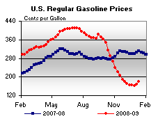 | 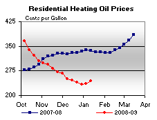 | ||||||
| 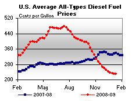 | 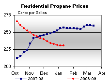 | ||||||
| Retail Data | Changes From | Retail Data | Changes From | ||||
| 01/12/09 | Week | Year | 01/12/09 | Week | Year | ||
| Gasoline | 178.4 | Heating Oil | 243.9 | ||||
| Diesel Fuel | 231.4 | Propane | 230.8 | ||||
| Spot Prices (Cents Per Gallon*) | |||||||||||||||||||||||||||||||||||
| 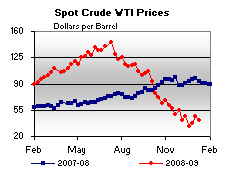 | 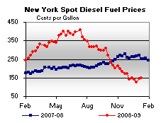 | ||||||||||||||||||||||||||||||||||
| 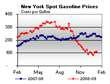 | 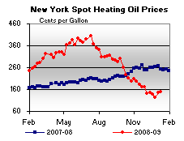 | ||||||||||||||||||||||||||||||||||
|
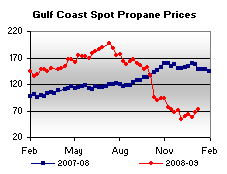 | ||||||||||||||||||||||||||||||||||
| *Note: Crude Oil WTI Price in Dollars per Barrel. | |||||||||||||||||||||||||||||||||||
| Stocks (Million Barrels) | |||||||
| 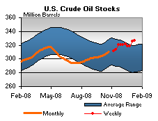 | 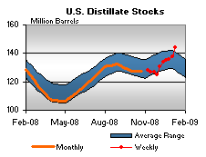 | ||||||
| 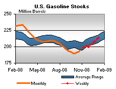 | 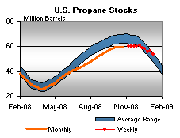 | ||||||
| Stocks Data | Changes From | Stocks Data | Changes From | ||||
| 01/09/09 | Week | Year | 01/09/09 | Week | Year | ||
| Crude Oil | 326.6 | Distillate | 144.2 | ||||
| Gasoline | 213.5 | Propane | 53.742 | ||||